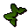
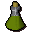

Toad's legs
| Config name | toads_legs |
| Item id | 2152 |
| Value | 2 gp |
| Weight | 150g |
| Members | Yes |
| Tradeable | Yes |
| Stackable | No |
| Options | Eat |
| Category | gnome_premade_and_toadlegs_kingworm |
| Defined in | scripts/skill_cooking/configs/gnome_cooking/gnome_cooking.obj |
Toad's legs
They're a gnome delicacy apparently.
How to make
| Skill | Level | XP | Ingredients | Tool | How | Where | Makes |
|---|---|---|---|---|---|---|---|
| None | 1 | click in pack | 1 |
Used to make
| Skill | Level | XP | Ingredients | Tool | How | Where | Makes |
|---|---|---|---|---|---|---|---|
| Cooking | 1 | use on item | members | ||||
| Cooking | 1 | use on item |  Spicy toad's legsmembers; gnome spice is not used up | ||||
| Cooking | 1 | 60.0 | use on object | range | can spoil into | ||
| Cooking | 1 | use on object | range | can spoil into | |||
| Herblore | 34 | 80.0 | use on item |  Agility potion(3)members |
Referenced in scripts
scripts/_test/scripts/cheats/cheat_bank.rs2scripts/_test/scripts/debug/debug_gnomecooking.rs2scripts/minigames/game_agilityarena/scripts/agilityarena_tickettrader.rs2scripts/skill_cooking/scripts/gnome_cooking/gnome_battas.rs2scripts/skill_cooking/scripts/gnome_cooking/gnome_bowls.rs2scripts/skill_cooking/scripts/gnome_cooking/gnome_cooking.rs2scripts/skill_cooking/scripts/gnome_cooking/gnome_crunchies.rs2scripts/skill_cooking/scripts/gnome_cooking/swamp_toad.rs2